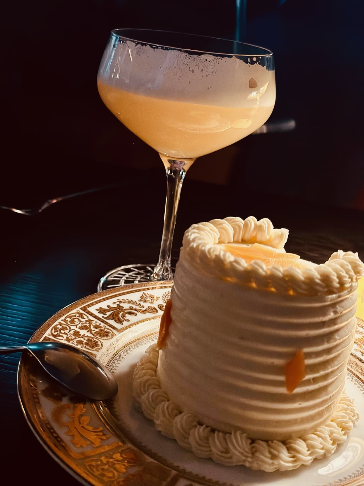

EIN JAHR YORCK. EIN JAHR UNTERNEHMERTUM. EIN JAHR VOLLER AHA-MOMENTE, MUTIGER ENTSCHEIDUNGEN UND RICHTIG GUTER ZUSAMMENARBEIT.
Im April 2024 haben wir uns entschieden: Wir gründen. Keine Idee mehr im Hinterkopf. Keine hypothetischen „Wenn wir mal…“-Sätze. Sondern: einfach machen. Wir wollten eine Boutique-Beratung aufbauen, die so arbeitet, wie wir es für richtig halten. Mit einer eigenen Kultur. Mit Haltung. Mit einem klaren Wertekompass. Und – das war uns von Anfang an wichtig – mit einem echten Fokus auf Wirkung. Ende Mai haben wir uns dann ins Handelregister eingetragen und waren offiziell am Markt. Als Yorck! Als Wir!

UND JETZT? EIN JAHR SPÄTER? Wir sind da. Und wir wachsen. Nicht nur an Erfahrung, sondern auch im Team (der erste Yorckie ist da, der zweite kommt sehr bald 👋), an Projekten, an Themen – und natürlich auch an uns selbst. Wir hatten uns auf mehr Chaos eingestellt. Und dann kam: ein ziemlich gutes erstes Jahr. Was wir vor allem empfinden, ist: Dankbarkeit, Verwunderung und Stolz. Dankbarkeit darüber, wie sehr unser Beratungsansatz bei unseren Kund:innen andockt. Wie viel Vertrauen uns geschenkt wird. Und wie erfüllend es ist, wenn genau das zurückkommt: Zusammenarbeit auf Augenhöhe. Wirkung. Stolz und Dankbarkeit für fünf aktive Kunden, drei verschiedene Branchen, Projekte mit Geschäftsführungen, HR-Teams und strategischen Stabsstellen Wir durften Prozesse neu denken, Kulturen entwickeln, Führung neu ausrichten – und ganz unterschiedliche Organisationen bei echten Transformationen begleiten. Dabei greifen wir auf unsere Konzern-Erfahrung zurück – Accenture, Capgemini, IBM – und tauchen gleichzeitig in neue, oft viel kleinere Settings ein. Ganzheitlich, nahdran, fast schon wie aus dem Lehrbuch. Und dann ist da noch: Verwunderung. Darüber, wie natürlich sich das alles anfühlt. Wie leicht vieles geht. Und – ganz ehrlich – wie viel Spaß das macht.
Was wir in diesem ersten Jahr gelernt haben? So einiges. Vor allem aber das hier:
Strukturen entstehen organisch, wenn man sich Raum gibt zum Denken, Ausprobieren und Reflektieren. Sprintbasiertes Arbeiten funktioniert für uns hervorragend – schnell, fokussiert und mit ausreichend Gelegenheit zum Innehalten. Wir ergänzen uns als Gründungsteam extrem gut. Unterschiedliche Stärken, gleiche Werte – und das Vertrauen, dass der andere immer mitdenkt.
Es gibt niemanden über uns, keinen doppelten Boden. Aber genau das ist unsere Freiheit: Wir können unseren Beratungsansatz so bauen, wie wir glauben, dass er den größten Unterschied macht – für unsere Kund:innen und für uns. Und ja – Beratung funktioniert zu großen Teilen über Empfehlungen und Vertrauen. Es gibt keine große Brand im Hintergrund, die mitzieht. Keine Corporate, hinter der man sich verstecken kann. Dafür gibt es Menschen, die uns vertrauen. Die uns weiterempfehlen. Und die Lust haben, mit uns gemeinsam neue Wege zu gehen.
Dafür sind wir unfassbar dankbar. An unsere Kund:innen: Danke für eure Offenheit, euer Vertrauen, eure Lust auf Entwicklung. Dass wir mitdenken, mitfühlen, mitwirken dürfen – ist alles andere als selbstverständlich.
Und bei uns? Kein Tag ohne Austausch, gegenseitige Rückversicherung, ehrliches Feedback – und dieses stille Vertrauen: „Ich weiß, du hast das im Blick.“ Es macht einfach Spaß, zu zweit zu denken, zu entscheiden und komplett verantwortlich zu sein Und ja, als Ehepaar zu gründen, das sich seit 17 Jahren kennt, ist definitiv ein Vorteil – aber Hand aufs Herz: Das hätte auch so richtig in die Hose gehen können. Also nochmal: Dankbarkeit.

TOSCANA, BABY. - Im September feiern wir unser erstes Jahr – nicht mit Torte, sondern mit einer WorkAction an der italienischen Küste. Ein bisschen reisen, ein bisschen ausatmen, ein bisschen am Meer sitzen und gemeinsam nach vorne denken: Wie sieht Jahr 2 aus? Wo wollen wir hin? Wie wachsen wir – gesund, mutig und mit Substanz? Denn es gibt so viele Themen, Kooperationen und Kund:innen, die uns begeistern Es wäre fast fahrlässig, nicht größer zu denken.
Ein Jahr Yorck. Und es fühlt sich an, als hätte alles gerade erst angefangen.


auf uns, die Yorckies
← Zurück zu Insights